경영지도사-1차-1교시 (2021-04-03 기출문제)
1과목: 중소기업관련법령
1. 중소기업기본법상 중소기업을 육성하기 위한 정부의 시책으로 명시되지 않은 것은?
- 투명한 경영과 기업의 사회적 책임
- 중소기업 사이의 협력
- 사업 영역의 보호
- 지방 소재 중소기업 등의 육성
- 국제화의 촉진
(정답률: 알수없음)

2. 중소기업기본법의 내용으로 옳지 않은 것은?
- 중소기업 옴부즈만은 업무처리 결과에 따라 필요한 경우 업무기관의 장에게 관련 사항의 개선을 권고할 수 있다.
- 정부는 중소기업시책을 효율적으로 실시하기 위하여 중소벤처기업부령으로 정하는 바에 따라 세제상의 지원을 할 수 있다.
- 중소벤처기업부장관은 통합관리시스템의 구축ㆍ운영을 위하여 대통령령으로 정하는 바에 따라 전담기구를 설치ㆍ운영할 수 있다.
- 중소기업 보호ㆍ육성에 관한 다른 법률을 제정하거나 개정할 때에는 이 법의 목적에 맞도록 하여야 한다.
- 정부는 중소기업의 활동현황, 자금, 인력 및 경영 등 실태를 파악하기 위하여 매년 정기적으로 실태조사를 실시하고 그 결과를 공표하여야 한다.
(정답률: 알수없음)
3. 중소기업기본법상 중소기업 옴부즈만이 업무에 관한 활동 결과보고서를 작성하여 보고하여야 하는 대상을 모두 고른 것은?
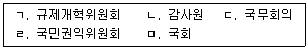
- ㄱ, ㄴ, ㄷ
- ㄱ, ㄴ, ㄹ
- ㄱ, ㄷ, ㅁ
- ㄴ, ㄹ, ㅁ
- ㄷ, ㄹ, ㅁ
(정답률: 알수없음)
4. 중소기업창업 지원법상 창업지원정책협의회에 관한 설명으로 옳지 않은 것은?
- 위원장은 중소벤처기업부장관이 된다.
- 위원장 1명을 포함하여 25명 이내의 위원으로 구성한다.
- 창업촉진 및 재창업지원 정책에 관하여 필요한 사항을 관계 중앙행정기관 및 창업지원기관과 협의하기 위하여 중소벤처기업부에 창업지원정책협의회를 둔다.
- 간사 1명을 두며, 간사는 중소벤처기업부 공무원 중에서 중소벤처기업부장관이 지명한다.
- 위원장은 필요한 경우 창업촉진 및 재창업지원에 관한 학식과 경험이 풍부한 사람으로 구성된 자문단을 운영할 수 있다.
(정답률: 알수없음)
5. 중소기업창업 지원법상 중소기업상담회사에 관한 설명으로 옳지 않은 것은?
- 중소기업상담회사란 중소기업의 사업성 평가 등의 업무를 하는 회사로서 중소벤처기업부장관에게 등록한 회사를 말한다.
- 창업 절차의 대행 사업을 영위하는 회사로서 이 법에 따른 지원을 받으려는 자는 중소벤처기업부령으로 정하는 바에 따라 중소벤처기업부장관에게 중소기업상담회사로 등록하여야 한다.
- 중소벤처기업부장관은 중소기업창업투자회사를 겸업하지 아니하는 중소기업상담회사가 창업자에게 용역을 제공하면 그 용역 대금의 100분의 90 이내의 금액을 지원할 수 있다.
- 중소기업상담회사가 창업자에게 용역을 제공한 후 그 용역 대금 일부의 지원을 받으려면 용역대금지원신청서에 중소벤처기업부령으로 정하는 서류를 첨부하여 중소벤처기업부장관이 지정하는 기관이나 단체에 제출하여야 한다.
- 중소기업상담회사 및 창업보육센터사업자는 반기별로 중소벤처기업부장관에게 업무 운용 상황 등에 관한 사항을 보고해야 한다.
(정답률: 알수없음)
6. 중소기업창업 지원법상 사업계획의 승인을 받은 창업자에 대한 부담금의 면제에 관한설명으로 옳은 것을 모두 고른 것은?(문제 오류로 가답안 발표시 5번으로 발표되었지만 확정답안 발표시 모두 정답처리 되었습니다. 여기서는 가답안인 5번을 누르면 정답 처리 됩니다.)
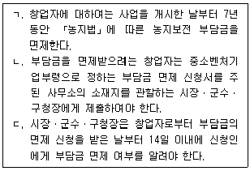
- ㄱ
- ㄴ
- ㄱ, ㄴ
- ㄴ, ㄷ
- ㄱ, ㄴ, ㄷ
(정답률: 알수없음)
7. 중소기업창업 지원법상 창업진흥원에 관한 설명으로 옳지 않은 것은?
- 창업진흥원은 법인으로 하며, 주된 사무소의 소재지에서 설립등기를 함으로써 성립한다.
- 창업진흥원은 수익사업으로 창업 관련 학술연구용역을 할 수 있다.
- 창업진흥원이 수익사업으로 하던 창업 관련 정보 제공 및 자문 사업을 중단하려는 경우 미리 그 사실을 중소벤처기업부장관에게 보고해야 한다.
- 창업진흥원에 관하여 이 법에서 정한 것을 제외하고는 「민법」의 재단법인에 관한 규정을 준용한다.
- 창업진흥원의 주된 사무소 소재지는 대통령령으로 정한다.
(정답률: 알수없음)
8. 벤처기업육성에 관한 특별조치법상 벤처기업확인에 관한 설명으로 옳은 것은?
- 벤처기업확인기관의 장은 확인에 소요되는 비용을 벤처기업 확인을 요청하려는 자에게 부담하게 할 수 없다.
- 벤처기업확인기관의 장은 벤처기업의 확인을 취소하려면 청문을 실시하여야 한다.
- 벤처기업확인위원회는 위원장을 포함한 위원 5명 이상의 출석으로 개의한다.
- 벤처기업확인서의 유효기간은 확인일부터 5년으로 한다.
- 벤처기업 확인에 소요되는 비용의 산정 및 납부에 필요한 사항은 대통령령으로 정한다.
(정답률: 알수없음)
9. 벤처기업육성에 관한 특별조치법상 신기술창업집적지역(이하 '집적지역'이라 함)에 관한설명으로 옳지 않은 것은?
- 대학의 장은 대학이 소유한 교지의 일정 지역에 대하여 창업자ㆍ벤처기업 등의 생산시설 및 그 지원시설을 집단적으로 설치하는 집적지역의 지정을 중소벤처기업부장관에게 요청할 수 있다.
- 대학의 장은 집적지역의 지정을 요청할 때 집적지역의 명칭, 집적지역 지정 면적 등을 포함하는 집적지역개발계획을 제출하여야 한다.
- 대학이 집적지역 지정을 받으려면 대학이 보유한 교지의 연면적에 대한 지정 면적의 비율이 100분의 30을 초과하지 아니하여야 한다.
- 대학이 집적지역 지정을 받으려면 지정 면적이 5천 제곱미터 이상이어야 한다.
- 중소벤처기업부장관은 지정된 집적지역이 사업 지연, 관리 부실 등의 사유로 지정목적을 달성할 수 없는 경우 그 지정을 취소할 수 있다.
(정답률: 알수없음)
10. 벤처기업육성에 관한 특별조치법상 신기술창업전문회사(이하 '전문회사'라 함)에 관한설명으로 옳지 않은 것은?
- 대학은 그가 설립한 전문회사의 발행주식 총수의 100분의 20 이상을 보유하여야 한다.
- 대학은 전문회사를 설립할 때 산업재산권등의 현물을 출자할 수 있다.
- 전문회사는 그 사업을 수행하기 위하여 필요하면 정부로부터 자금을 차입할 수 있다.
- 중소벤처기업부장관은 전문회사가 거짓으로 등록한 경우 그 등록을 취소하여야 한다.
- 대학ㆍ연구기관이 보유한 기술의 사업화는 전문회사가 영위하는 업무에 해당한다.
(정답률: 알수없음)
11. 벤처기업육성에 관한 특별조치법상 벤처기업육성촉진지구(이하 '촉진지구'라 함)에 관한 설명으로 옳지 않은 것은?
- 시ㆍ도지사는 벤처기업을 육성하기 위하여 필요하면 관할 구역의 일정지역에 대하여 촉진지구의 지정을 중소벤처기업부장관에게 요청할 수 있다.
- 중소벤처기업부장관이 촉진지구로 지정하기 위해서는 교통ㆍ통신ㆍ금융 등의 기반시설이 갖추어져 있는 지역이어야 한다.
- 중소벤처기업부장관은 촉진지구를 지정한 경우 대통령령으로 정하는 바에 따라 그 내용을 고시하여야 한다.
- 국가나 지방자치단체는 촉진지구에 있는 벤처기업에 자금을 우선하여 지원할 수 있다.
- 대학이나 연구기관이 없는 지역이라도 촉진지구로 지정될 수 있다.
(정답률: 알수없음)
12. 중소기업진흥에 관한 법률상 용어의 뜻으로 옳지 않은 것은?
- “중소기업의 자동화”란 중소기업자가 생산성과 품질의 향상을 위하여 각종 자동화설비를 통하여 생산공정을 합리적으로 개선하는 것을 말한다.
- “중소기업의 정보화”란 중소기업자가 컴퓨터 또는 각종 제어장치를 이용하여 경영관리와 유통관리를 전산화하는 등 중소기업의 전산망을 구축하는 것을 말한다.
- “물류현대화”란 중소기업자가 생산하는 제품의 원활한 유통을 도모하고 물류비용을 절감하기 위하여 유통시설을 설치하거나 개선하는 것을 말한다.
- “집적화”란 여러 중소기업자가 공동으로 공장 등 사업장을 집단화하는 것 등을 말한다.
- “가업승계”란 중소기업이 동일성을 유지하면서 상속이나 증여를 통하여 그 기업의 소유권 또는 경영권을 친족에게 이전하는 것을 말한다.
(정답률: 알수없음)
13. 중소기업진흥에 관한 법률상 명문장수기업에 관한 설명이다. ( )에 들어갈 숫자가 순서대로 옳은 것은?
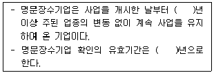
- 50, 5
- 45, 10
- 45, 5
- 30, 10
- 30, 5
(정답률: 알수없음)
14. 중소기업진흥에 관한 법률상 긴급경영안정지원계획에 포함되어야 하는 사항에 해당하지않는 것은?
- 지원 지역
- 지원 대상
- 지원 기간
- 경영건전성 지원시스템
- 자금ㆍ입지ㆍ인력지원 및 기술지도 등 관계 중앙행정기관별 지원 내용
(정답률: 알수없음)
15. 중소기업진흥에 관한 법률상 지역별 중소기업 육성 기본지침(이하 '기본지침'이라 함) 등에 관한 설명으로 옳은 것은?
- 시ㆍ도지사는 기본지침에 따라 다음 연도의 관할구역 내 지방중소기업의 육성계획을 수립하여 매년 11월 30일까지 중소벤처기업부장관에게 제출하여야 한다.
- 중소벤처기업부장관은 기본지침을 작성하려면 미리 해당 지방자치단체의 장과 협의하여야 한다.
- 시ㆍ도지사는 매년 육성계획의 추진실적을 분석하고 다음 해 1월 말일까지 그 분석 결과를 중소벤처기업부장관에게 제출하여야 한다.
- 중소벤처기업부장관은 기본지침을 매년 9월 30일까지 시ㆍ도지사에게 전달하여야 한다.
- 시ㆍ도지사가 기업의 현황과 조업상황을 파악하기 위하여 지방국세청장에게 요청해 취득한 자료는 육성계획의 수립 외의 목적으로 사용할 수 있다.
(정답률: 알수없음)
16. 중소기업 기술혁신 촉진법상 중소기업 기술혁신지원단의 업무로 명시된 것은?
- 중소기업 기술혁신을 위한 정책연구 및 중장기 기획
- 중소기업 기술혁신 기반조성
- 정보화경영 표준모델의 개발ㆍ보급ㆍ확산 및 표준모델과의 부합화 지원
- 시행기관의 기술혁신 지원계획의 사전검토
- 중소기업 기술혁신 및 정보화경영에 관한 교육 및 전문인력의 양성
(정답률: 알수없음)
17. 중소기업 기술혁신 촉진법의 내용으로 옳지 않은 것은?
- 중소벤처기업부장관은 중소기업의 기술혁신 및 제품인증 등을 위한 시험ㆍ분석에 필요한 지원을 할 수 있다.
- 중소기업 지원 선도연구기관 지정의 유효기간은 지정받은 날부터 5년으로 한다.
- 중소벤처기업부장관이 중소기업 기술진흥 전문기관에 대하여 업무의 정지를 명하려는 경우에는 청문을 실시하지 않아도 된다.
- 중소벤처기업부에 설치하는 중소기업 기술혁신 추진위원회는 위원장 1명을 포함한 20명 이상 30명 이하의 위원으로 구성한다.
- 중소벤처기업부장관은 중소기업의 기술혁신 성과물의 보호를 위한 보안기술의 보급ㆍ확산 및 기반조성에 필요한 지원 사업을 추진할 수 있다.
(정답률: 알수없음)
18. 중소기업 기술혁신 촉진법상 중소기업 기술혁신 촉진계획의 수립에 관한 설명이다. ( )에 들어갈 내용이 순서대로 옳은 것은?
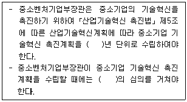
- 1, 중소기업정책심의회
- 3,「국가과학기술자문회의법」에 따른 국가과학기술자문회의
- 3, 중소기업정책심의회
- 5, 국무회의
- 5,「국가과학기술자문회의법」에 따른 국가과학기술자문회의
(정답률: 알수없음)
19. 여성기업지원에 관한 법률상 여성기업에 대한 지원 내용을 모두 고른 것은?
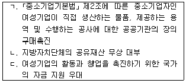
- ㄱ
- ㄴ
- ㄱ, ㄷ
- ㄴ, ㄷ
- ㄱ, ㄴ, ㄷ
(정답률: 알수없음)
20. 소상공인 보호 및 지원에 관한 법률상 소상공인의 구조개선 및 경영합리화 등의 구조 고도화를 지원하기 위한 정부의 사업으로 명시되지 않은 것은?
- 사업전환의 지원
- 새로운 사업의 발굴
- 취업훈련의 실시
- 소상공인 해외 창업의 지원
- 사업장 이전을 위한 입지 정보의 제공
(정답률: 알수없음)
21. 중소기업 사업전환 촉진에 관한 특별법상 사업전환촉진을 위한 지원사업에 해당하지 않는 것은?
- 중소기업지원기관과 단체 등을 활용한 정보제공체제의 구축
- 중소기업자의 규모와 업종에 적합한 컨설팅 서비스의 제공
- 국내외 유휴설비 유통정보의 제공과 거래 주선
- 인수ㆍ합병등을 위한 중개기반의 구축 지원
- 사업전환을 추진하는 중소기업자에 대한 지역별ㆍ업종별 실태조사
(정답률: 알수없음)
22. 중소기업 사업전환 촉진에 관한 특별법의 내용으로 옳은 것을 모두 고른 것은?
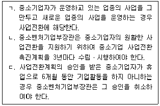
- ㄱ
- ㄴ
- ㄱ, ㄴ
- ㄴ, ㄷ
- ㄱ, ㄴ, ㄷ
(정답률: 알수없음)
23. 중소기업 인력지원 특별법상 중소기업 인력지원 기본계획에 포함되어야 하는 사항으로 명시되지 않은 것은?
- 중소기업의 근무환경 개선에 관한 사항
- 중소기업 인력지원의 목표 및 정책 기본방향
- 중소기업의 지역별ㆍ업종별ㆍ직종별 인력의 실태 및 특성에 관한 사항
- 산업구조의 변화를 반영한 중소기업의 인력활용에 관한 사항
- 중소기업에 필요한 인력의 양성ㆍ공급에 관한 사항
(정답률: 알수없음)
24. 중소기업 인력지원 특별법을 적용하지 아니하는 중소기업 업종을 모두 고른 것은?
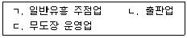
- ㄱ
- ㄴ
- ㄱ, ㄴ
- ㄱ, ㄷ
- ㄴ, ㄷ
(정답률: 알수없음)
25. 장애인기업활동 촉진법상 장애인기업 확인의 취소 사유로 명시되지 않은 것은?
- 거짓이나 그 밖의 부정한 방법으로 장애인기업의 확인을 받은 경우
- 차별적 관행의 시정요구에 응하지 않은 경우
- 법령에 따른 장애인기업의 요건에 맞지 아니하게 된 경우
- 폐업 등의 사유로 기업활동을 하지 아니하게 된 경우
- 정당한 사유 없이 법령상의 보고와 검사를 거부한 경우
(정답률: 알수없음)
2과목: 경영학
26. 경영학 이론 중 시스템적 접근방법의 속성이 아닌 것은?
- 목표지향성
- 환경적응성
- 분화와 통합성
- 투입 –전환-산출 과정
- 비공식집단의 중요성
(정답률: 알수없음)
27. 기업가정신의 필요성에 직접적으로 해당하지 않는 것은?
- 기업환경의 변화에 대한 대응
- 학습곡선의 안정화
- 창조적 조직문화의 조성
- 새로운 가치사슬의 탐색
- 혁신의 원동력
(정답률: 알수없음)
28. 거시수준의 구조조정에 해당하는 것은?
- 산업구조조정
- 제품구조조정
- 사업구조조정
- 재무구조조정
- 인력구조조정
(정답률: 알수없음)
29. 2명 이상의 공동출자로 기업 채무에 사원 전원이 연대하여 무한책임을 지는 기업형태는?
- 유한회사
- 합자회사
- 합명회사
- 협동조합
- 주식회사
(정답률: 알수없음)
30. 경영자의 바람직한 윤리적 환경 구축에 관한 설명으로 옳지 않은 것은?
- 윤리의식이 잘 갖추어진 사람을 채용하고 승진시킨다.
- 윤리적 행동에 높은 가치를 부여하는 조직문화를 육성한다.
- 윤리담당자를 임명한다.
- 방임적 통제 프로세스를 발전시킨다.
- 사람들이 의사결정과정에서 윤리적 차원을 고려하도록 한다.
(정답률: 알수없음)
31. 포터(M. Porter)의 산업구조분석 모형에 해당하지 않는 것은?
- 산업군내 기존 산업 간의 경쟁
- 구매자의 교섭력
- 공급자의 교섭력
- 잠재적 진입자의 위협
- 대체재의 위협
(정답률: 알수없음)
32. 높은 진입장벽에 해당하지 않는 것은?
- 진입에 있어 높은 자본소요량이 필요함
- 진입한 기존 기업들이 규모의 경제를 확보함
- 잠재적 진입자와 진입한 기존 기업간의 기술적 차이가 적음
- 진입한 기존 기업들이 지적재산권을 확보함
- 진입한 기존 기업들이 유통채널을 구축함
(정답률: 알수없음)
33. 다른 회사와의 연합으로 부가가치 확대와 경쟁우위를 확보하고자 하는 전략은?
- 제휴전략(coalition strategy)
- 수평적 통합(horizontal integration)
- 원가우위전략(cost leadership)
- 방어전략(defensive strategy)
- 수직적 통합(vertical integration)
(정답률: 알수없음)
34. 전략집단(strategic group)을 의미하는 것은?
- 제품단위의 비용우위전략이다.
- BCG 모델의 cash cow에 해당한다.
- 수명주기의 단계이다.
- 가치사슬(value chain)의 유형이다.
- 산업내 유사한 전략을 채택한 기업군이다.
(정답률: 알수없음)
35. 하멜과 프라할라드(Hamel & Prahalad)가 제시한 핵심역량(core competence) 강화와 관련이 없는 것은?
- 비관련 다각화(unrelated diversification)
- 제휴전략(coalition strategy)
- 차별화전략(differentiation strategy)
- 리엔지니어링(reengineering)
- 가치사슬 분석(value chain analysis)
(정답률: 알수없음)
36. 집단의사결정기법에서 변증법적 토의법에 관한 설명으로 옳은 것은?
- 집단구성원들이 한 가지 문제를 두고 각자의 아이디어를 무작위로 개진하여 최선책을 찾아가는 의사결정 기법
- 집단구성원들이 회의에 참석하지만 각자 익명의 서면으로 의견을 제출하고 간략한 견해를 피력하는 개별 토의 후에 표결로 의사결정하는 기법
- 반론자를 지정하여 해당 주제의 약점을 제기하게 하고 이에 대한 토론 과정을 거쳐 의사결정하는 기법
- 전문가 의견을 독립적으로 수집하여 그들의 의견을 보고 수정된 의견을 제시하는 일련의 반복과정으로 의사결정하는 기법
- 집단구성원들을 절반으로 나누어 반대 의견을 개진하면서 토론을 거쳐 의사결정하는 기법
(정답률: 알수없음)
37. 조직 내 권력의 원천 중 준거적 권력에 관한 설명으로 옳은 것은?
- 조직의 보상과 자원을 통제할 수 있는 능력
- 다양한 벌을 통제할 수 있는 능력
- 조직적 직위로 타인을 통제할 수 있는 능력
- 가치관 유사, 개인적 호감으로 통제할 수 있는 능력
- 가치 있는 정보를 소유하거나 분석할 수 있는 능력
(정답률: 알수없음)
38. 유기적 조직의 특성이 아닌 것은?
- 융통성 있는 의무
- 많은 규칙
- 비공식적 커뮤니케이션
- 탈집중화된 의사결정 권한
- 수평적 구조
(정답률: 알수없음)
39. 공간과 시간, 그리고 조직의 경계를 넘어 컴퓨터와 정보ㆍ통신기술을 이용하는 조직형태는?
- 기능식 조직
- 사업부제 조직
- 매트릭스 조직
- 가상 조직
- 프로세스 조직
(정답률: 알수없음)
40. 거래적 리더십의 구성요소에 해당하는 것을 모두 고른 것은?
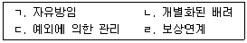
- ㄱ, ㄴ
- ㄷ, ㄹ
- ㄱ, ㄷ, ㄹ
- ㄴ, ㄷ, ㄹ
- ㄱ, ㄴ, ㄷ, ㄹ
(정답률: 알수없음)
41. 고도의 전문기술이 필요한 직종에서 장기간 실무와 이론 교육을 병행하는 교육훈련 형태는?
- 오리엔테이션
- 도제제도
- 직무순환제도
- 정신개발 교육
- 감수성 훈련
(정답률: 알수없음)
42. 다음과 같은 특징이 있는 임금형태는?
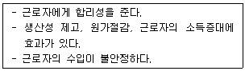
- 연공급
- 직능급
- 직무급
- 성과급
- 역량급
(정답률: 알수없음)
43. 자동화기술과 생산관리기술을 결합하여 주문생산과 대량생산을 동시에 고려한 생산시스템은?
- 집단가공법
- 수치제어가공
- 셀 제조방법
- 모듈생산
- 유연생산시스템
(정답률: 알수없음)
44. 가격이 높으면 품질이 좋다는 판단을 유도하는 가격전략은?
- 심리가격
- 명성가격
- 유보가격
- 습관가격
- 준거가격
(정답률: 알수없음)
45. 유동자산 1억원, 유동부채 1억원, 총부채 6억원, 자기자본 2억원, 총자본 8억원인 ㈜우리 기업의 부채비율은?
- 50 %
- 100 %
- 200 %
- 300 %
- 400 %
(정답률: 알수없음)
46. 기존의 경영활동을 무시하고 기업의 부가가치를 산출하는 활동을 완전히 백지상태에서 새롭게 구성하는 경영혁신기법은?
- 리스트럭처링(restructuring)
- 아웃소싱(outsourcing)
- 목표관리(management by objective)
- 전략사업단위(strategic business unit)
- 리엔지니어링(reengineering)
(정답률: 알수없음)
47. 정보기술을 전략수행이나 경쟁우위 확보를 위해 활용하는 정보시스템은?
- EDP(electronic data processing)
- ES(expert system)
- SIS(strategic information system)
- DSS(decision support system)
- TPS(transactional processing system)
(정답률: 알수없음)
48. 우버(Uber)와 에어비엔비(Airbnb) 등 공유가치 기반 창업의 핵심요인은?
- 클라우드(cloud)
- 다단계 유통채널(distribution channel)
- 규모의 경제(economy of scale)
- 물류단지(logistic facility)
- 경험효과(effect of experience)
(정답률: 알수없음)
49. SWOT 모델에서 철수전략이 필요한 경우는?
- 강점 –기회
- 약점-기회
- 강점 –위협
- 약점-위협
- 모든 경우
(정답률: 알수없음)
50. 사내 벤처비즈니스의 성공요인이 아닌 것은?
- 의사결정을 행사할 수 있다.
- 자원을 활용할 수 있다.
- 실패를 두려워하지 않는다.
- 팀원을 채용할 수 있다.
- 조직경계를 넘지 않는다.
(정답률: 알수없음)
3과목: 회계학개론
51. 다음 설명에 해당하는 용어는?
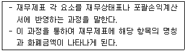
- 인식
- 통합
- 분류
- 측정
- 제거
(정답률: 알수없음)
52. 재무제표 요소의 측정에 관한 설명으로 옳지 않은 것은?
- 역사적원가의 측정시점은 과거이다.
- 현행원가의 측정시점은 현재이다.
- 사용가치의 측정시점은 미래이다.
- 공정가치는 유입가치이다.
- 사용가치는 유출가치이다.
(정답률: 알수없음)
53. 재무제표의 작성과 표시에 관한 설명으로 옳지 않은 것은?
- 경영진은 재무제표를 작성할 때 계속기업으로서의 존속가능성을 평가해야 한다.
- 기존의 대출계약조건에 따라 보고기간 후 적어도 12개월 이상 부채를 차환하거나 연장할 것으로 기대하고 있고 그런 재량권이 있는 경우라도 보고기간 후 12개월 이내에 만기가 도래하면 유동부채로 분류한다.
- 한국채택국제회계기준을 준수하여 재무제표를 작성하는 기업은 그러한 준수 사실을 주석에 명시적이고 제한없이 기재한다.
- 기업은 현금흐름 정보를 제외하고는 발생기준 회계를 사용하여 재무제표를 작성한다.
- 재고자산이나 매출채권에 대한 평가충당금을 차감하여 관련 자산을 순액으로 표시하는 것은 상계표시에 해당하지 않는다.
(정답률: 알수없음)
54. 현금흐름표에 관한 설명으로 옳지 않은 것은?
- 자금개념을 현금및현금성자산으로 정의한다.
- 기간별 경영성과를 평가하는데 유용하다.
- 영업, 투자 및 재무활동으로 분류하여 보고한다.
- 배당지급능력 및 부채상환능력에 대한 정보를 제공한다.
- 미래현금흐름의 예측과 평가에 유용한 정보를 제공한다.
(정답률: 알수없음)
55. (주)한국의 20×1년도 매출액이 ￦1,200,000, 매출채권회수기간이 72일(1년은 360일 가정)인 경우 평균매출채권 금액은? (단, 매출액은 전액 외상매출이며, 매출채권회전율 계산 시 재무상태표계정은 기초와 기말의 평균값을 이용한다.)
- ￦200,000
- ￦240,000
- ￦280,000
- ￦320,000
- ￦360,000
(정답률: 알수없음)
56. (주)한국은 20×1년 6월 1일에 연 12% 이자율로 ￦2,000,000을 (주)대한에게 1년간 대여 하였다. 이자는 만기인 1년 후에 받기로 한 경우 20×1년 말에 인식할 수정분개는?
- (차) 현금 140,000 (대) 이자수익 140,000
- (차) 선수이자 140,000 (대) 이자수익 140,000
- (차) 이자수익 140,000 (대) 선수이자 140,000
- (차) 이자수익 140,000 (대) 미수이자 140,000
- (차) 미수이자 140,000 (대) 이자수익 140,000
(정답률: 알수없음)
57. (주)한국은 20×1년 초 3년분 보험료 ￦600,000을 선급하고 전액 20×1년의 비용으로 잘못 기록하였다. 20×2년도 장부마감 전 오류를 발견한 경우 오류수정분개의 영향은?
- 선급보험료 ￦400,000이 증가한다.
- 이익잉여금 ￦600,000이 증가한다.
- 보험료 ￦400,000이 증가한다.
- 당기순이익 ￦200,000이 감소한다.
- 순자산 ￦400,000이 증가한다.
(정답률: 알수없음)
58. 회계감사에 관한 설명으로 옳지 않은 것은?
- 감사인의 의견표명에 따라 재무제표의 신뢰성을 제고하고 재무제표이용자가 회사에 대한 올바른 판단을 할 수 있도록 한다.
- 감사인은 충분하고 적합한 감사증거를 입수한 결과 왜곡표시가 재무제표에 개별적으로 또는 집합적으로 중요하며 동시에 전반적이라고 결론을 내리는 경우 한정의견을 표명해야 한다.
- 감사보고서는 감사기준에 따라 수행된 감사에 대한 감사인의 보고로 반드시 서면방식으로 해야 한다.
- 재무제표에 대한 감사인의 의견은 회사의 재무상태 또는 경영성과의 양호 여부를 평가하거나 장래 전망을 보장하는 것은 아니다.
- 회계감사를 수행하더라도 재무제표 작성에 대한 경영진의 책임은 감사인에게로 이전될 수 없다.
(정답률: 알수없음)
59. (주)한국의 20×1년 말 당좌예금계정 잔액은 ￦25,500이었으나 은행예금증명서상의 당좌예금 잔액은 ￦29,000으로 서로 불일치하였다. (주)한국의 20×1년 말 정확한 당좌예금잔액은?
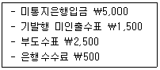
- ￦25,500
- ￦26,000
- ￦27,500
- ￦28,000
- ￦30,500
(정답률: 알수없음)
60. (주)한국의 20×1년 재고자산 관련 자료는 다음과 같다.
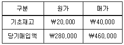
20×1년 매출액이 ￦420,000인 경우 평균원가소매재고법에 의한 기말재고자산의 원가는?
- ￦40,000
- ￦40,800
- ￦48,000
- ￦48,800
- ￦50,200
(정답률: 알수없음)
61. 유형자산의 취득원가에 가산되지 않는 것은?
- 매입할인과 리베이트
- 최초의 운송 및 취급 관련 원가
- 설치장소 준비원가
- 전문가에게 지급하는 수수료
- 유형자산 취득과 관련된 취득세
(정답률: 알수없음)
62. (주)한국은 20×1년 초에 사용하던 기계장치를 (주)대한과 교환하기로 하였다. 이 교환거래가 상업적 실질이 존재할 경우 (주)한국이 인식할 유형자산처분이익은?
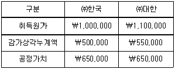
- ￦50,000
- ￦100,000
- ￦150,000
- ￦200,000
- 당기순이익으로 인식할 금액은 없다.
(정답률: 알수없음)
63. 무형자산의 합계액은?
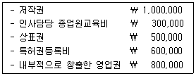
- ￦1,500,000
- ￦1,800,000
- ￦2,100,000
- ￦2,900,000
- ￦3,200,000
(정답률: 알수없음)
64. (주)한국은 20×1년 초 액면금액 ￦1,000,000(액면이자율 연 10%, 만기 3년, 매년 말 이자 지급)의 사채를 발행하였다. (주)한국이 사채발행 당시의 시장이자율 연 12%를 반영하여 ￦951,980에 할인발행한 경우 3년간 포괄손익계산서에 인식할 총 이자비용은? (단, 사채 발행비가 존재하지 않아 사채발행일의 시장이자율과 유효이자율은 일치한다.)
- ￦248,020
- ￦300,000
- ￦348,020
- ￦360,000
- ￦368,020
(정답률: 알수없음)
65. 부채에 관한 설명으로 옳지 않은 것은?
- 우발부채는 재무제표에 부채로 인식하지 아니한다.
- 미래의 예상 영업손실은 충당부채로 인식한다.
- 충당부채는 의무의 상대방이 누구인지 반드시 알아야 하는 것은 아니다.
- 충당부채로 인식되는 금액은 현재의무를 보고기간 말에 이행하기 위하여 소요되는 지출에 대한 최선의 추정치이어야 한다.
- 예상되는 자산처분이 충당부채를 생기게 한 사건과 밀접하게 관련되었더라도 예상되는 자산처분이익은 충당부채를 측정하는 데 고려하지 않는다.
(정답률: 알수없음)
66. 자본총액에 영향을 미치는 것은?
- 주식배당
- 무상증자
- 액면미달 주식발행
- 이익준비금 적립
- 주식분할
(정답률: 알수없음)
67. 20×1년 초 설립된 (주)한국의 20×3년 말 현재 자본계정은 다음과 같다.
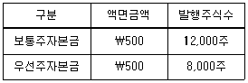
(주)한국은 20×3년 말까지 추가적인 주식발행이 없었으며, 우선주(누적적, 완전참가적우선 주)에 대해서는 5%의 현금배당을 지급하기로 하였으나 배당가능이익의 부족으로 배당을 실시한 적이 없다. 20×3년 말 배당재원의 확보로 20×4년 초 주주총회에서 ￦1,100,000의 현금배당 결의 시 우선주에게 지급해야 할 배당금은?
- ￦300,000
- ￦420,000
- ￦600,000
- ￦680,000
- ￦720,000
(정답률: 알수없음)
68. 수익과 비용의 인식에 관한 설명으로 옳지 않은 것은?
- 광의의 수익에는 수익과 차익이 모두 포함된다.
- 수익은 가득요건과 실현요건이 충족될 때 인식한다.
- 판매세나 부가가치세 등과 같이 제3자를 대신하여 받는 금액은 수익에서 제외한다.
- 비용은 수익ㆍ비용대응의 원칙에 따라 인식한다.
- 당기에 발생한 원가 중 미래 경제적 효익의 가능성이 불확실한 경우 합리적인 배분절차에 따라 비용을 인식한다.
(정답률: 알수없음)
69. (주)한국은 20×1년 1월 1일 상품을 3년간 매년 말에 ￦200,000씩 3회에 걸쳐 분할회수 하는 조건으로 판매하였다. 판매당시 시장이자율 12%일 때, (주)한국이 20×2년도 인식할 이자수익은? (단, 이자율 12%, 3기 연금현가계수는 2.40183이다.)
- ￦24,000
- ￦40,561
- ￦48,000
- ￦57,644
- ￦119,634
(정답률: 알수없음)
70. 이연법인세회계의 대상이 되지 않는 항목은?
- 미수이자로 인한 이자수익
- 매출채권 대손상각비 한도초과
- 연구및인력개발준비금
- 감가상각비 한도초과
- 접대비 한도초과
(정답률: 알수없음)
71. (주)한국의 20×1년 재고자산 및 원가와 관련된 자료는 다음과 같다. (주)한국의 20×1년 매출원가는?
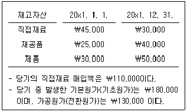
- ￦220,000
- ￦240,000
- ￦255,000
- ￦290,000
- ￦310,000
(정답률: 알수없음)
72. (주)한국은 선입선출법에 의해 종합원가계산을 수행하고 있다. 원재료는 공정 초기에 전량 투입되고, 가공원가는 공정 전반에 걸쳐 균등하게 발생한다. 기초재공품의 가공원가 완성도는 60%이며, 기말재공품의 가공원가 완성도는 40%이다. 다음의 자료를 이용하는 경우, ㉠재료원가의 완성품환산량 단위당원가와 ㉡가공원가의 완성품환산량 단위당원가는 각각 얼마인가?
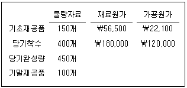
- ㉠: @430, ㉡: @290
- ㉠: @430, ㉡: @300
- ㉠: @450, ㉡: @290
- ㉠: @450, ㉡: @300
- ㉠: @490, ㉡: @350
(정답률: 알수없음)
73. 최신관리회계기법에 관한 설명으로 옳은 것은?
- 카이젠원가계산(kaizen costing)은 작으면서도 지속적인 공정개선을 통한 원가절감보다는 혁신적인 내부프로세스의 변화를 추구한다.
- 타겟코스팅(target costing)은 제품의 수명주기 중에서 연구개발 및 설계단계에 초점을 맞추는 원가관리기법이다.
- 제약이론(theory of constraints)은 운영원가를 단기적으로 변화시킬 수 있는 변동원가로 본다.
- 제품수명주기원가계산은 제품제조단계에서의 원가절감을 강조한다.
- 적시생산시스템(just-in time)은 재고자산을 최대화하므로 전사적 품질관리가 이루어져야 한다.
(정답률: 알수없음)
74. (주)한국은 20×1년 스마트폰을 생산하여 개당 ￦1,000에 판매하고 있다. 스마트폰 생산을 위해서는 개당 직접재료원가 ￦400, 직접노무원가 ￦100, 변동제조간접원가 ￦150이 발생하며, 연간 고정제조간접원가는 ￦150,000이 발생하였다. 판매과정에서는 개당 변동판매관리비 ￦100이 발생하며, 연간 고정판매관리비는 ￦130,000이 발생하였다. (주)한국의 손익분기점 판매량은?
- 428개
- 520개
- 600개
- 800개
- 1,120개
(정답률: 알수없음)
75. (주)한국의 20×1년 분기별 판매예산은 다음과 같이 예상하고 있으며, 제품단위당 판매가격은 ￦200이다.
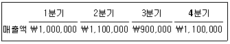
20×1년 초 제품의 재고량은 750단위이며, 각 분기말 제품재고량은 다음 분기 예상판매량의 10%를 여유재고로 보유하는 재고정책을 유지하고 있다. (주)한국이 2분기에 생산해야 할 제품의 수량은?
- 5,200단위
- 5,300단위
- 5,400단위
- 5,500단위
- 5,550단위
(정답률: 알수없음)